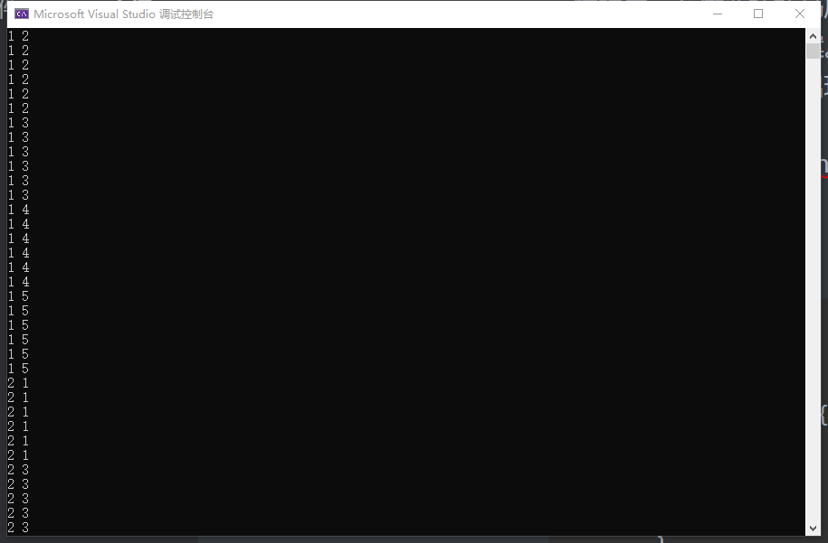
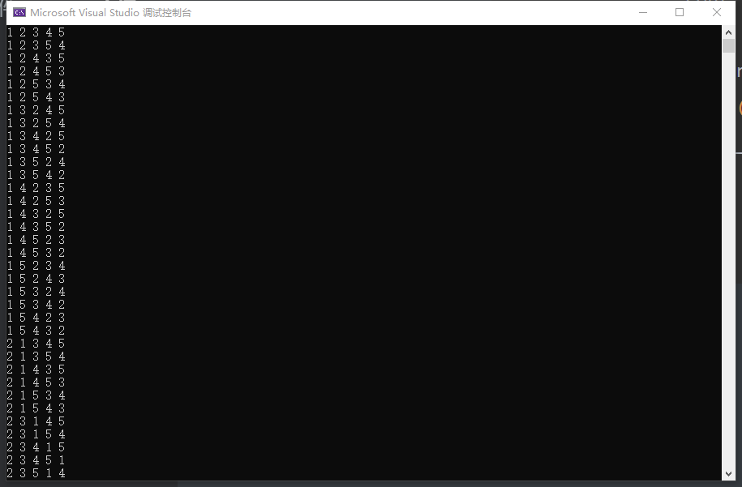

全排列相关问题
next_permutation：全排列
c++中的next_permutation函数用于将一个序列按照字典序重新排列成下一个更大的排列。
其原理是：
- 从右到左扫描序列，找到第一个满足a[i] < a[i+1]的位置，记为i；
- 从右到左扫描序列，找到第一个大于a[i]的位置j，交换a[i]和a[j]；
- 将序列从i+1位置开始反转，使得i+1位置到末尾的子序列变为字典序最小的序列。
最后得到的序列即为下一个更大的排列。
如果已经是字典序最大的排列，则函数返回false，否则返回true。
前情提要：在做蓝桥杯马虎的算式的时候，想使用next_permutation对9个数字全排列并取出前5位数字。理论正确，结果最终结果远大于正确答案。看题解，发现问题所在：本身全排列是不会重复的，但只取9位数字前5位，前5位的组合若不加处理必然有重复情况出现。
解决方法：使用reverse(nums+5，nums+9)；
例：5位取2位
首先不加reverse：
1 | int main() |
结果：
1.只显示两位：
2.显示完全：
可以看出很多时候都是只改变了后面几位，所以导致在取前几位的时候产生重复。
然后加reverse结果：

只看前两位的话会发现没有重复产生。
原因：因为全排列结果是按顺序产生的，一开始12345，在翻转后3位后成为12543，达到了12开头排序组合的最大值，所以下一次必然改变前两位。同理，13245，翻转后成为13542，下一次必然14开头。
所以使用reverse与next_permutation可以对序列取出任意不重复长度的全排列。prev_permutation同理。
本博客所有文章除特别声明外，均采用 CC BY-NC-SA 4.0 许可协议。转载请注明来自 mizukiusami！